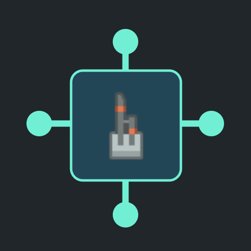

<- all projects

Circuit Census
PC
Volume
Live
Wake the city, one connection at a time.
The city of Lumen has gone quiet. Join technician Nia and a very literal maintenance robot to restore its districts and recover the messages of the engineer who designed the network. Each repair is a logic puzzle about signal paths built from six component types with simple, visible rules, so no electronics knowledge is needed. Every device must receive exactly the live inputs it asks for, and every source has a cable limit. Work with sources, relays, counted devices, switches, one-way diodes and two-input junctions, and test the circuit whenever you like. Play 100 repairs across five chapters, plus a daily layout and 90 extra briefs.